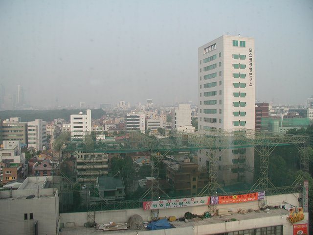
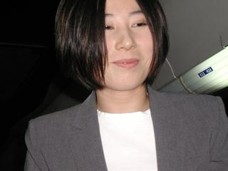
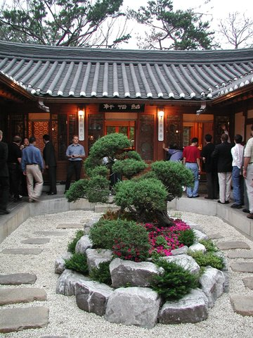
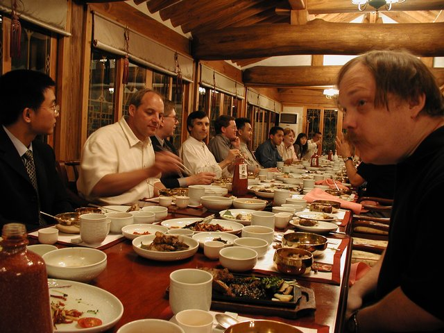
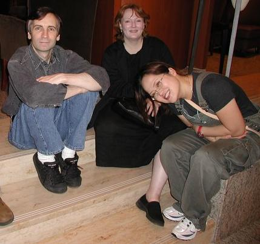
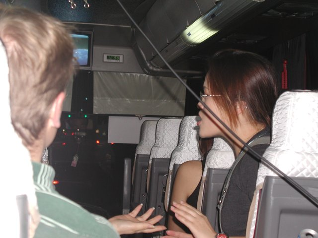

I am sitting in a dance club being pummelled by bad techno music. I have been awake for twenty-nine hours straight, ten and a half of them spent crossing the Pacific. I am now in the land beyond fatigue jag, full of brittle energy and knowing that I will crash very hard within a few hours. It is the fourteenth of June in the year 2000 and here I am in Seoul, Korea on the evening of the same day that the presidents of North and South Korea exchanged their unexpected first handshake — a fact which largely relieves the concern I would otherwise feel about being less than fifty miles from millions of heavily-armed Communist troops. To them, today probably feels like history and hope. To me, it feels like looking in a funhouse mirror.
There are about a dozen Korean girls in fluorescent white gyrating under the dance floor lights with a couple of guys. If I had either a language or a decade in common with those kids, I'm thinking, I might go out there and even the odds a little. Instead I study my companions.
There are about a dozen of us, too; Americans and Europeans drawn to this foreign shore by `Global Linux 2000', the conference I will be speaking at in two days' time. One of us, Joanne, is a Korean-born American returned to her birth country to help haul it into the Internet age. All of us agree that the music is wretched, but Joanne's boss John is the kind of genially tipsy host that wants everyone around him to be having as good a time as he is. He is daring everybody to hit the dance floor. I would be much more resistant to this idea if Joanne were not smiling at me. She is very lovely, and dressed to the nines in black and red silk.
I'm thinking back to the trip in from the airport. I've done enough traveling in the last two years to have learned to read a city by the face it shows as you drive in. Airport routes aren't calculated to take you through the local monuments to civic pride; instead, you generally get a more realistic view of the bone and sinew, where people work and live and make things. Seoul looks like a pretty typical Asian capitol city — prosperous, bursting at the seams, and sweltering under a blanket of smog as bad as LA in the old days.

Seoul
It's hard to avoid comparisons with Japan, though I know Koreans would find them odious. Compared to Tokyo, Seoul seems a grim and earnest place. Perhaps that comes from lower average wealth, perhaps from having been within range of North Korean artillery for forty-five years of armed truce. The people are on average smaller and darker-complected than Japanese, but there is also more variation in color than Japanese show and a few of the locals are as light-skinned as northern Europeans. Overall Koreans are a stocky, muscular, and tough-looking breed. And, as usual in Asia, there are beautiful girls everywhere you turn around.
Seoul's modern buildings, even more than Tokyo's, are gray and anonymous. What does the most to give the place a visual identity is the graceful script on signs everywhere. Compared to the spidery intricacies of Chinese or Japanese calligraphy, Korean hanggul looks spare and functional and elegant. Koreans are very proud of their hangul, which they claim is the most rationally-designed system of writing in the world. They are arguably right, and would certainly be right if Korean hadn't drifted in pronunciation during the last four centuries since the hanggul were designed as a perfect phonetic alphabet for it. As it is, they have competition from the Latin-alphabet orthographies of Hawaiian and Finnish.
John finally teases a critical mass of us into moving. I follow Joanne to the dance floor, regretting that the music is so mindless but determined to give a decent account of myself. Fortunately the DJ has an unexpected attack of taste a few minutes later and tracks some latin-beat stuff — not Ricky Martin either, thank goodness, but nice hot salsa. Joanne is game but obviously even less used to dancing than I am. I teach her a simplified variation of the tango step. By the time the music reverts to utter mindlessness I have been awake for thirty-one hours continuous. I bid everyone adieu, hug Joanne, and stumble back to my hotel to fall over.
Morning comes early in these parts; there is smog-tinted sunlight pouring in my window at 5 am. I curse the photons and try for a few hours' more sleep but give up a little before 7. I have nothing planned for today, but the organizers had said by email they would set up a bit of a tour for me, incuding a Buddhist temple and the headquarters of the World Tae Kwon Do federation. I don't know when this is to be, however; the organizers have been notably sparing with details and I do not think there has been a lot of pre-planning of anything.
After a quick breakfast, the first thing to do is find the convention center. It turns out to be a colossus of modernism about a block from my hotel. The interior is a series of vast caverns gleaming with marble; it can readily support three or four conventions at once, and is in fact doing so. Besides the Linux conference, there is an international machinists' convention going on, and at least two others with no English on their signs. The girls at the help desks spotted around the place don't speak English, but I manage to find Global Linux 2000 without too much trouble. Joanne catches up with me on the escalators, looking businesslike and demure in a gray suit.
On the way there I finally meet Ashley, the show organizer responsible for my schedule. She turns out to be another one of the astonishing local beauties, an intelligent, vivacious and outgoing woman who I find out later used to be an airline stewardess. She tells me my tour has been set up for two o'clock.

Ashley
The show floor is as noisy as the discotheque was, and for some of the same reasons — though why exhibitors think it is effective to plug their product with excessively-loud dance music, I don't know. I make a beeline for the Greenhouse booth, where I'm told they have a working Internet connections. They do, but a slow one — and I have just short of 1200 email messages waiting. I begin to plow through them.
I haven't made nearly enough progress when I decide I need to break for lunch. I go hunting for the booth Joanne is working, thinking I'll pry her loose and ask her to help me find some traditional Korean lunch food. Before I find her, however, I bump into about a half-dozen of the other show speakers also looking for lunch. They tell me the show has issued them meal tickets for lunch and hand me a couple. We hie off to the convention center's food court.
And there it is, unamaginatively labeled "FOOD COURT" in multicolored Roman letters. Inside, my efforts to buy lunch by waving my meal tickets at the boys running a dim-sum booth lead only to spates of Korean and finger-pointing. I wander around feeling rather helpless and increasingly hungry until one of the other show speakers who has grokked in fullness explains. Despite the appearance that all these booths are separate enterprises, it seems I'm actually supposed to take my order and my payment to a central desk, where yet another smiling Korean girl will enter the order and issue me a number. Only then do I go queue up at the booth. Part of me wonders if this is a metaphor for Korean society; most of me just wonders when I will actually get lunch.
The dim-sum booth is out of the three dishes I would have found interesting. An attempt to purchase Thai duck with red sauce comes to nothing as I discover that (despite the menu) it is no longer offered. I opt for bibimbap, a traditional Korean lunch dish which I am told will include steamed rice, fried egg, vegetables, chili paste and pork. It certainly includes something resembling cabbage with a very tough and woody texture that demands an unpleasant amount of chewing. The sweet Korean rice is good, but I am unable to discover any trace of either chili paste or pork in my dish. I had been teasing one of my companions about having ordered a hamburger, but perhaps I shouldn't have; I eventually have to write the bibimbap off as an educational but unsatisfying failure and order a beef kebab myself.
My wrestle with lunch makes me late for my 1:30 appointment, but this is OK as my difficulties have been telegraphed ahead by the show organizers. Everyone in Korea wears a cellphone, and (uninhibited by the American recipient-pays system) they use them far more casually than Americans do. The girl at the food court lunch counter was using hers as an intercom to phone orders to booths fifteen feet away.
My 1:30 is a Professor Kim from one of South Korea's major technical universities. He wants to set up a Korean center for free software and wants ideas on how best to go about it from Tim Ney of the Free Software Foundation and myself. We encourage him to fund local Linux and GNU users groups and I assure him I am willing to come back to Korea to speak at his launch conference. Then I go off to plow through more of my mail.
I have just discovered that telnet is unaccountably much faster than POP3 on this link and, started reading my mail that way when one of the show organizers tells me my limo has been waiting for half an hour outside the lobby of my hotel, the Coex Intercontinental, two blocks away. Limo? Aarggh! Having carefully kept the organizers up-to-date on my whereabouts, I had been expecting that my tour guide would find me — or, at last, that I'd be directed to the proper rendezvous. No such luck. I head over to the Coex in a tearing hurry, thinking that my guide will have written me off and departed by the time I get there.
Matters are not really helped by the Korean fanboy who attaches himself to me as I'm leaving the Expo floor. He is so anxious to be helpful that brushing him off would seem like kicking a puppy, but I am too preoccupied with salvaging this mess in my schedule to properly play the role of Great Man in his script. Making an effort, I thank him for his rather ineffectual guidance when we get to the Coex. He fades into the distance mumbling gratefully, and I am bemused by the thought that I have probably made his month. I wish I could have paid him more genuine attention.
Ashley is indeed waiting in the hotel lobby, with my guide who turns out to be a friend and co-worker from her stewardess days. My guide's name is Kyung Wan Kang, and she seems unreasonably impressed that I can pronounce it correctly. She is as attractive as you'd expect of a flight attendant on a national-flag airline unencumbered by EEOC regulations — not as poised and immediately charming as Ashley, but perhaps even prettier and (as Ashley comments later) "with a good heart". Ashley admonishes us to have a good time and runs off to organize something else; we collect our chauffeur and are off.
Our first stop is Bong Wan Sa, a Korean Buddhist temple that turns out to be within walking distance of the Coex. Wan has never been there herself, though she tells me she has been to Buddhist temples near Pusan where her family lives. The wooden buildings remind me of Todai-ji in Kyoto, but are rather more decorated; the dominant influences seem to have been Chinese rococo rather than Zen austerity. Still, there is a Zenlike restfulness here. Despite being in the middle of Seoul the monks have done a pretty good job of maintaining the natural setting; trees and green things grow in profusion among the buildings, and the traffic noise seems muted and far away.
The interior ceiling of the main building is a particularly impressive work of art, with the intricate details of the woodwork picked out in bright blue, green, red, and yellow. Wan tells me of a folk belief that the bright colors ward off the demons of ill fortune. The back wall of the main temple is lined with glass cabinets in which sit thousands of tiny, identical images of a seated Buddha. In lieu of a candle each one has a teensy yellow nixie light protruding from its base, which despite its location forward of the Buddha's crossed legs manages to look rather phallic. Each image has a named and numbered tag; Wan explains that wealthy people buy these images from the temple as a kind of sponsorship and acquire merit thereby.
Wan tells me that Bong Wan Sa was the head temple of Korean Buddhism in times past, but is now mainly a training center for young monks. Despite this, I don't see any of them around. The people in the temple buildings all seem to be middle-aged and older women in Western clothes, sitting quietly on prayer cushions telling Buddhist rosaries or reading from what are presumably religious works. One of them invites Wan and myself to light candles and make wishes at the main altar, where a great gold image of the Amitabha Buddha is flanked by two lesser aspects.
I explain carefully through Wan that I am not exactly a Buddhist but more of a Buddhist sympathizer. The lady is cheerfully indifferent to fine points of theology and presses candles into our hands. We make our wishes and a shiko each. As we leave the main building Wan tells me that she wished good health for her parents, who have arthritis in their hands. I tell her that I have wished for freedom for all beings to work out their enlightenment in their own way. This leads to my trying to explain exactly what I am doing in Korea. This is a difficult effort; Wan is far from stupid, but neither does she have the technical background in computers that would make the open-source idea easy to explain. Nevertheless she seems to catch the spirit of what open-source people are trying to do, and to admire it.
We wander around the temple's outbuildings for about half an hour after that, admiring the architecture and talking. Wan tells me about her job, cabin crew on the Seoul-Amsterdam route; about living with her sisters in Seoul because her parents "will not permit me to live alone"; about teaching high-school English, which she does when not on airplanes. I tell her a little about my life and travels, and invite her to come with me to the reception that will be held at the Coex that evening.
At about 3:30 we rejoin our chauffeur and head over to the Kukkiwon, the world headquarters of Tae Kwon Do. During the twenty-minute ride over, I try to teach Wan to pronounce her friend Ashley's name correctly. The consonant cluster "shl" does not occur in Korean or in Japanese, the language Wan majored in in college, so her pronunciation tends to come out "Ashulee". Wan's efforts are not tremendously successful but we are both quite entertained by the process.
The TKD school I studied at for nine years is a Kukkiwon affiliate; my first-degree Black Belt certificate is on file in these buildings somewhere, not that I have any particular need to find it. We discover a gymnasium/exhibition hall where an actual training class is going on; forty or so of what look like high-school or college students being harangued in a familiar style by an instructor. The command words and many of the moves look familiar. The kids are wearing black belts, but many of them move more like senior kup students — not badly, but not quite with the disciplined snap and focus I expect from a dan-rank either. I knew the Dragon Gym was a high-quality, well-respected TKD school; now I begin to think it was better than I knew.
When the class breaks up, Wan and I explore some more and find the Kukkiwon's souvenir shop. I am not entirely surprised to find that it is cheesy to the max. The merchandise runs heavily to tacky commemmorative plaques, silly key rings, cute anime cartoons of characters doing TKD moves, foam-rubber martial-arts weapons, and similar crap. My wife Cathy had muttered something about wanting a souvenir from Korea, but there is nothing here I can bring myself to take home.
Wan, talking with the proprietors, learns that there is a TKD museum on the site. We follow the directions, but find it shut up (despite the sign, which claims it ought to be open). Alas. But as we walk away from the door we're spotted by a muscular, sharply-dressed young man in white gloves who turns out to be the museum manager. He opens up the place for us. Wan explains in Korean (with asides to me explaining the explanation) that I am a visiting il dan from the U.S. who is speaking at a software conference.
The manager makes impressed noises, but I note that his eyes are tracking Wan rather than me. I decide that I would be astonished if it were otherwise — Wan, happy and glowing slightly in the early summer heat, exudes a sexy innocence that could make a bishop kick a hole in a stained-glass window to get a better look. Part of her charm is that she seems genuinely unaware of her effect on anyone male and not dead below the neck. As I take my first turn around the museum I keep an amused eye on her interaction with the manager, who is attempting to chat her up in a style that has probably changed very little since before the discovery of fire. The fact that I can't parse Korean saves me from the distraction of what they are saying and frees me to observe their body language. They are a handsome couple, and unless my interactive senses have deserted me, he is a good sort (Wan tells me later he is a 6th dan, which is quite a high rank for a man of before middle age and not something you attain without unusual character as well as technique). She could do far worse.
The museum itself is an improvement on the cheesy souvenir shop, but it is more a history of the Kukkiwon itself than of TKD. Much of it is pictures of various dignitaries, or gifts presented to the Kukkiwon by school branches and other martial-arts organizations. The most interesting exhibit to me is a sepia-toned Koguryo-period manuscript illustration showing two pudgy men doing recognizable flying kicks. It is not precisely dated, but could be as much as 1500 years old.
Wan, meanwhile, seems either oblivious to the manager's attentions or to be politely ignoring them; it's hard to tell which. The poor guy is understandably frustrated, but hiding it quite well. There is a moment when I see Wan writing something for him on a piece of paper and think he may have scored her phone number — but, alas for him, she is merely correcting his English.
Soon we thank him and take our leave. I tease Wan gently about having gained an admirer. She appears genuinely to believe that it was really me he was impressed with; apparently even 1st dan is a rank considered worthy of respect here, and part of the back-and-forth was her filling him in on my background as an international troublemaker. Then, from behind us, we hear the manager calling out. He is inviting us back to to the museum to watch a TKD video.
It proves fairly interesting, a sort of anthology of the most impressive moments from national and Olympic-team demonstrations. There are elaborate flying board breaks of all kinds; simulated two-on-one mugging scenarios; demonstrations of TKD-based police tactics like comealong holds; and much more. The manager plies us with cold drinks, and Wan with good-natured gallantry. Wan remains impervious and, apparently, oblivious. She will star in his fantasies for weeks, I suspect.
After this we head back to my room at the hotel. There are 45 minutes to kill before the reception; Wan spends them polishing her English by reading the beginning of a fantasy novel I have with me (Thomas Harlan's "Oath of Empire"). The reception itself is much like similar events I have endured in Japan and Venezuela — mind-numbing speeches by boring dignitaries, formal toasts, and a palpable sense of relief when they finally turn us loose on the canapes. RMS is tapped to make a speech and does so, but there is no translator working and it's clear that his standard rant is going right over the audience's collective head.
For me, even Wan's and Joanne's and Ashley's decorative presences can't do much to rescue the event. The previous night's opening reception had been more interesting, if `interesting' is the word for it; the organizers told me a whole five minutes before showtime that I was to give out three awards on behalf of the conference. One of them was to my friend Jordan Hubbard, front guy of FreeBSD and fellow .45 semi fan; the other two to Korean Linux people with names that it is fortunate I was not required to remember. I spoke the required banalities and executed the expected ritual motions. Jordan and I successfully kept straight faces. It was a success, I suppose.
Meanwhile, back in the present, I bid Miss Wan adieu. She must leave, as she is teaching the next morning, but she gives me her email address. The reception breaks up shortly afterwards; mindful that my talk is tomorrow, I decline an invitation to go clubbing with the party-animal types among the speakers.
I spend most of the following morning catching up on my email, which has piled up to hideous heights. I am working in the Greenhouse, an email garden set up on the show floor by a new organization greenhouse.com that aims to be a nonprofit incubator for open-source software companies. Fortunately, it has working Ethernet connections. Unfortunately, the Red Hat and Zion Systems booths nearby are pumping out techno-disco at high volume, and at times the Greenhouse becomes something painfully resembling a giant resonating chamber. I represent to the organizers that next year's show would be tremendously improved by banning all loudspeakers from the show floor...
One of the people working the Greenhouse is a woman whose badge says "Annie Wu". She is a systems analyst from Shanghai, and pretty in a classically Chinese way I have read about but never seen face-to-face before (I later learn there is a specific Mandarin term for it which translates as "having good eyes", and describes a particular variant of the epicanthic fold). I notice that she seems to be fussing over me a bit, asking if I need help, offering me cold drinks, etc. Eventually I figure out that she thinks I am soliciting her active attention by smiling at her, when in fact I am actually smiling at her simply because my eyes tend to track on the nearest moving object when I'm leaning back mentally composing a reply, and my hindbrain then notices that she is pretty while my forebrain is processing something else. I explain the misunderstanding and we have a good laugh about it. For the next couple of days, when Annie and I catch one another's eye, one of is likely to say "Can I help you?" following which we both collapse in a fit of giggles.
My speech Friday morning goes pretty well. The success is largely due to the fact that the conference has sprung for a pair of simultaneous translators and the non-English speakers are able to hear a near-real-time rendition of my ranting through earphones. The translators are good; they even manage to put over some of my jokes. Afterwards I attempt to apologize for the difficulties I suspect my slangy, energetic and informal presentation style creates for them. They must relish a challenge, because they tell me they enjoy working with a good speaker.
The real event of Friday, though, was the formal Korean feast. This was held in a 500-year-old palace in another green oasis in the heart of Seoul. All the conference's speakers, and the organizers, sat at a long low table and were confronted with a large variety of peculiar substances bearing some sort of relationship to food. It was quite challenging. And educational. And I think pre-modern Koreans must have had chronic protein-deficiency problems.

The palace in
Seoul

The feast
An incident at the feast launches the other running joke I get involved in, with Leslie Proctor of the FSF. We have been becoming acquainted because she is helping the show organizers do scheduling. Our relationship takes a new turn Friday evening when Richard Stallman sees the two of us standing accidentally side by side and asks "Are you two related?"
Leslie and look at each other, two minds with but a single thought: "What drugs is he on?." A quarter-second later we watch each other doing a double-take as the realization strikes us both that Richard's question was not crazy. We do look like relatives, come to think of it — and not distant ones, either. We have similar skull and facial shapes, eye colors, reddish-brown hair, and burn-then-peel skin tone; and the combination is not an especially common one. We analyze the matter, and discover that we have about the same ancestral genetic mix combining Celts, Rhinelander Germans, and a dab of Amerind. We decide that Richard's acuity should be rewarded and take to addressing each other as "cousin".
Leslie is the center figure in the following picture. She works with Tim Ney, who keeps the Free Software Foundation running. The pretty girl leaning on Leslie is Gui Hee, one of the conference organizers; about whom more later.

I spend most of Saturday with a couple of guys from a Korean media outfit who had got wind of my interest in Buddhist temples, and drove me south from Seoul to a city called Yeoju. There we visited the 900-year-old Temple of the Coming Buddha. More tranquil gardens, more lovely woodwork — and Buddhist preaching from vending machines. Yes, at Yeoju you can drop an offering in a slot and hear a canned Buddhist discourse (in Korean) on some edifying topic.
The most interesting thing I saw at this temple was a collection of brightly-painted ritual instruments hundreds of years old — huge taiko-like drums, great brass horns, gongs, and (for some reason) a large metal effigy of a fish.
Afterwards we stopped at a sculpture garden, containing a fascinating collection of Buddhist devotional art. Most of it was elaborate wooden sculpture by a single obsessed artist — fantastically detailed wooden filigrees of the Amitabha Buddha, of snarling tigers, of peculiar figures from Korean folk myth.
That night, a bunch of us ate bulgoki at a streetside restaurant in Seoul. Bulgoki, for those of you so unfortunate as not to have experienced it, is Korea's national dish — marinated beef, with lettuce and scallions, that you cook right at your table. Delicious, especially combined with the nutty/sweet taste of Korean rice and searing-hot red-peppered kimchi. It's a very social kind of eating, everyone clustered around the grill and actively involved in preparing the food they eat.
But that was only the veriest beginnining of the evening. Next, they piled all the speakers onto a bus and headed us out to a famous mall for midnight shopping. This is a peculiarly Korean custom, as far as I know — shopping until you almost literally drop.
On the way there, we discover that our bus is equipped with a karaoke box. There ensues what I later mentally tag the Great Karaoke Massacre, as various of us proceed to do things that approximate singing. Frank Sinatra's "My Way", the Eurythymics' "Sweet Dreams" and Queen's "We Are The Champions" meet particularly horrible fates. I do Procol Harum's "Whiter Shade of Pale"; it is later alleged by witnesses that I sang pretty well, but I sure didn't think so at the time. Ashley and Gui Hee sang Korean folk tunes in lovely clear voices, sounding infinitely better than most of the beer-lubricated men on the bus.

Gui Hee during the
Great Karaoke Massacre
By American standards the mall itself is kind of downmarket, poorly lit and crowded with a lot of rickety little stalls. But there is an amazing variety of goods on sale cheap and volume is brisk. I reflect that it's easy to sneer at consumer culture when you're already as rich in things as an American, but this is still the Third World — people really can buy themselves better lives here, and they're energetically doing it. I like what I'm seeing.
I get my third lesson in Asian body language here when Gui Hee declares her intention to help me find a present for my wife. She then physically glues herself to me, holding my arm possessively, walking very close, hanging out in my intimacy zone, occasionally leaning her head on my shoulder. This is confusing — the more so because Gui Hee is a ripe and sexy woman. I'm having some hormonal difficulty thinking the situation through. In the U.S. her behavior would be a rather direct sexual invitation, but that seems an extremely unlikely interpretation given the rest of what she is doing — that is, plying me with questions about what my wife might like.
Gui Hee helps me pick out a hanbok, a traditional costume worn by married Korean women. It is a handsome shade of blue/purple with floral decoration. I restrain myself. Later, I quiz Ashley about the matter. She explains that in Korea, this body language is not necessarily a come-on but may simply signal respect for an older male. She looks a little troubled and mutters that she'll have to talk with Gui Hee about this. I share her concern; neither of us wants Gui Hee to wind up in trouble with a Westerner less self-controlled and self-aware than I.
After the mall, the disco. Ashley, quite justifiably pleading fatigue, bails out. Gui Hee takes us to a club in the university section of town. There is much music and dancing. Gui Hee clearly loves this part; her dance moves are sensual, wild, a touch angry, and I learn a great deal about her by watching them. The crowd is rather international; I flirt with a French exchange student in an oh-so-Parisian striped top. The hardest partiers are a couple of German hackers attached to the KDE project who had previously played, er, prominent parts in the Great Karaoke Massacre.

Gui Hee at some
undetermined point in the evening
We dance literally until dawn, and stumble out into the morning sunlight to flag down taxis and head back to the Intercontinental for a few hours' sleep.
The four days have gone by with startling speed. Ashley and I, perhaps to our surprise, discover that we have become friends when she comes to my hotel room to straighten out some sort of administrivia related to the conference. We have our conversation about Gui Hee's body language and talk of many other topics as well. Among other things, when I ask Ashley what the approved ethnic slur is for Westerners in Korea she smiles and taps the side of her nose.
It seems that in Korean slang Westerners are "big noses". I reflect with amusement that Ashley's nose is largish for a Korean's. But I do not get around to making this joke, because poor Ashley conks out. The woman has been running herself ragged for most of a week keeping the conference on track; she is so exhausted that my bed proves an irresistible lure. She crawls under the covers and falls sound asleep.
I sat there for two hours while Ashley slept, hacking quietly, feeling protective and thinking that I have been deeply complimented by Ashley's unconsidered intimacy with a man she has only known for a handful of days. She is bright, beautiful, hard-working, serious-minded, and kind; I decided that I like her a lot. Had I not feared the gesture would be misinterpreted as a sexual imposition, I would have kissed her lightly when I woke her up for dinner.
That was a fitting coda for my last day there. In Ashley, Kyung Wan and Gui Hee I have seen three faces of the kind of people the country produces — and in as patriarchal a culture as Korea, the strength of these women seems even more remarkable than it would in the U.S. Even given that the circumstances under which I met them selected strongly for the intelligent and outgoing, I'm impressed.
Fast-forward fourteen months...
My first time in Korea was very good to me. So when Gui Hee asked me to come back in September 2001 I didn't really hesitate.
My second trip wasn't for a conference but for a speaking tour. Three talks ("The Open Source Revolution", "Twenty Years Among The Hackers", "Freedom, Power, and Software") in two cities (Seoul and Pusan) to a total of about 1800 people. I guess they liked what they heard; they lined up for autographs afterwards by the dozens at all three places.
In fact, I have a new definition of `frustration' now — it's getting the melty wide-eyed hero-worshipping look from gorgeous twentysomething Korean college girls and knowing there is just no way I can ethically give them what their sexual-selective instincts are clamoring for. Two of them pressed pictures of themselves on me. Arrrggh! There I was, caught squarely between my male-primate hindbrain and the certain knowledge that chatting up any of those sweet young things would be a Really Bad Idea on many levels... :-)
The talks weren't the best part, though. The best part was hanging out with old friends and new. Old friends Gui Hee and Ashley, the organizers of Global Linux 2000 last year — two smart and energetic women not a bit less good-looking than those college girls. And new friends; Gui-Hee's boss Rodney (COO of Turbo Linux Systems, the company that sponsored my trip) and an expert on scientific cluster computing named Rok (the name is Slovene).
Friday evening was especially memorable, sitting with Rok and Ashley and Gui Hee and a couple others in a traditional Korean teahouse in In Sa Dong (Seoul's old quarter) talking of many things, sipping exotic teas. Walking arm-in-arm with Ashley and Gui Hee later on, singing songs: more Korean folk tunes from Gui Hee and Ashley, Pete Seeger's "Blue and Gray" from me (I then had to explain the American Civil War). Wandering past the floodlit main gate of the old Royal Palace, then through a night-shadowed Buddhist temple; bowing respect to the stone pagoda there, and watching Gui Hee pray for a few moments while Ashley and I hugged companionably against the chill.
A few minutes after that we got a reminder of the rest of the world; we walked by a building that was guarded by a full platoon of Korean military police in helmets and M-16s. Turned out to be the U.S. Embassy.
My companions are very lively company. Gui Hee teases Ashley and me a lot; actually she teases everyone a lot. She's intense, sexually challenging, somewhat hot-tempered, and likes to play being a bit of a bad girl — but she's really rather sweet underneath. She has kind of a younger-sister relationship with Ashley, who is a bit steadier and more cerebral. Ashley is very poised, very capable, a good organizer. They do marketing for two different technology companies in Seoul and have been best friends for years.
Weirdly, Gui Hee reports that they're both between boyfriends and having trouble finding new ones. They're pushing thirty, which is about the age Korean women are expected to be married, and no husband material is in sight. This causes me to think unflattering things about Korean men, who must be pretty damn lacking in taste not to be camping on both of these girls' doorsteps by the dozens.
Ashley seems a little blue, and I think I know why — she has mentioned that she is going to a friend's wedding party Saturday. So I flirt with her and am extra gallant and behave rather as if we're on a date, which does seem to buck her up; she flirts back a little, holds my hand, and seems to welcome an arm around her. Gui Hee, bless her kindhearted and devious little soul, spends half her time theatrically pretending to be scandalized by our behavior and half of it threatening to bail out and leave us alone together. Ashley and I tease her right back, announcing at one point that we've decided to run off to Rio de Janeiro together after robbing a bank.
Percolating somewhere in the back of Gui Hee's brain, I suspect, is the thought that it would be good for Ashley to get well and thoroughly laid. If so, then I think she is quite likely right and am willing to hold up my end of the proceedings. But matters do not go beyond warm hugs — which is OK; that seems to be what our friend Ashley needs. At one point when Ashley isn't around I suggest to Gui Hee that she ought to make a point of taking her friend out to have some fun and meet some men sometime soon. This message appears to be received and understood.
Next day, while Ashley is at the wedding party, Gui Hee and I go to the Demilitarized Zone — the buffer between South and North Korea, and the last frontier of the Cold War. It is less than an hour's drive north of Seoul.
For a few miles south of the DMZ there is almost no human habitation except South Korean military installations — and a few villages where the people live under martial-law-like regulations. The two countries never signed a peace treaty, only an armed truce, and the fear of North Korean infiltrators is real. Nor is it exaggerrated; a South Korean prime minister was assassinated by them in the not-too-distant past.
Gui Hee's boss Rodney is a former U.S. military intelligence analyst who specialized in North Korea; I regret we don't have him with us. Nevertheless looking across the DMZ is a surreal and sobering experience for anyone who has read the news leaking out of North Korea. At the observation point we visit, an immaculately-uniformed briefing officer tells us the only city visible from the South has been turned into a giant propaganda stage set — they know this because there is no washing on the clothelines and the house lights all turn on and off at the same time.
Behind that stage set, North Korea is a grim joke — famine-ridden but vicious, an Orwellian nightmare come true. Kim Il Sung's revolutionary vanguard took two-thirds of Korea's pre-1945 industry and central-planned most of it into rusting heaps of junk, and collective-farmed their agriculture into oblivion. Now the people are starving by millions while the government chants Leninist slogans about the inevitable victory of scientific socialism. Rodney told me that the whole country is militarized but ammunition is so short that soldiers only rarely fire live bullets in training. They wall out the world, except for sending out terrorists and assassins on missions that usually fail and gain their country nothing strategic when they succeed. The place is a crumbling asylum run by murderous lunatics.
If Communism had won, the whole planet would be like that. Ideas really do have consequences; I stare at the deserted grasslands across the DMZ and wish I could somehow swap out the suffering victims of the North Korean regime for the Westerners Lenin called "useful idiots" — the parlor Bolsheviks, the peace-at-any-price patsies, the vapid academic Marxists, and all the "moral equivalence"-spouting moral cretins I ever heard tell the world that we didn't deserve to win the Cold War. Let them "build socialism" together and starve. They'd be no loss, no loss at all.
The best is yet to come. In 1995 the South Koreans detected an infiltration tunnel running south 400 meters under the DMZ. They sank a shaft to intercept it, seized it, blocked the north end with a concrete plug — and opened the place to tourists. You can walk down the steep adit they dug and into the tunnel, 150 meters deep. It's cut through live granite. The roof is barely high enough for me at 5'7" and I have to duck my head frequently. The walls and ceiling are jagged rock, dripping moisture.
I think of orcs, but fantasy pales here; the whips driving the slaves who carved this tunnel were wielded by an evil more fell than Tolkien ever imagined. It can only be my imagination that I seem to feel it in the slime on the stones, and to hear echoes of pain and terror suffered under the lash in the trickling of the waters. That's what I tell myself, anyway. Then I come to the barrier.
Coils of barbed wire keep us yards away from the actual concrete plug, obviously meant to forestall any useful idiot who got the bright idea of blowing it open from the south side. The hanggul and English "RESTRICTED" signs are close enough to runes of power. North Korea is scant yards away on the other side. The Cold War is not yet quite over.
Gui Hee and I contemplate it in silence for a few moments, then turn and leave. As I had expected, the way out is harder than the way down; it's a long trudge back up the adit, and we are grateful for the first glimmer of surface light. Blinking, we emerge into the sunshine.